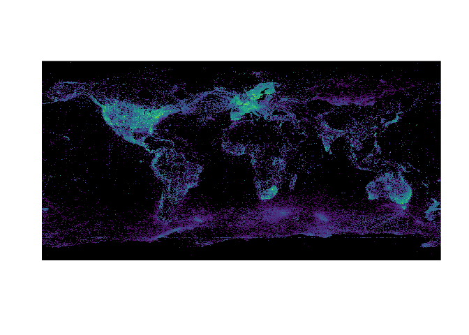

The goal of gbifdb is to provide a relational database interface to a parquet based serializations of gbif’s AWS snapshots of its public data 1. Instead of requiring custom functions for filtering and selecting data from the central GBIF server (as in rgbif), gbifdb users can take advantage of the full array of dplyr and tidyr functions which can be automatically translated to SQL by dbplyr. Users already familiar with SQL can construct SQL queries directly with DBI instead. gbifdb sends these queries to duckdb, a high-performance, columnar-oriented database engine which runs entirely inside the client, (unlike server-client databases such as MySQL or Postgres, no additional setup is needed outside of installing gbifdb.) duckdb is able to execute these SQL queries directly on-disk against the Parquet data files, side-stepping limitations of available RAM or the need to import the data. It’s highly optimized implementation can be faster even than in-memory operations in dplyr. duckdb supports the full set of SQL instructions, including windowed operations like group_by+summarise as well as table joins.
gbifdb has two mechanisms for providing database connections: one which the Parquet snapshot of GBIF must first be downloaded locally, and a second where the GBIF parquet snapshot can be accessed directly from an Amazon Public Data Registry S3 bucket without downloading a copy. The latter approach will be faster for one-off operations and is also suitable when using a cloud-based computing provider in the same region.
Installation
And the development version from GitHub with:
# install.packages("devtools")
devtools::install_github("ropensci/gbifdb")gbifdb has few dependencies: arrow, duckdb and DBI are required.
Getting Started
Remote data access
To begin working with GBIF data directly without downloading the data first, simply establish a remote connection using gbif_remote().
gbif <- gbif_remote()We can now perform most dplyr operations:
gbif %>%
filter(phylum == "Chordata", year > 1990) %>%
count(class, year) %>%
collect()
#> # A tibble: 461 × 3
#> class year n
#> <chr> <int> <int>
#> 1 Actinopterygii 2003 696289
#> 2 Actinopterygii 2009 1152201
#> 3 Elasmobranchii 2009 67477
#> 4 Actinopterygii 2010 1348109
#> 5 Elasmobranchii 2003 22638
#> 6 Ascidiacea 2013 9151
#> 7 Actinopterygii 2002 777535
#> 8 Actinopterygii 2008 1311066
#> 9 Elasmobranchii 2008 64769
#> 10 Elasmobranchii 2002 21948
#> # … with 451 more rowsBy default, this relies on an arrow connection, which currently lacks support for some more complex windowed operations in dplyr. A user can specify the option to_duckdb = TRUE in gbif_remote() (or simply pass the connection to arrow::to_duckdb()) to create a duckdb connection. This is slightly slower at this time. Keep in mind that as with any database connection, to use non-dplyr functions the user will generally need to call dplyr::collect(), which pulls the data into working memory.
Be sure to subset the data appropriately first (e.g. with filter, summarise, etc), as attempting to collect() a large table will probably exceed available RAM and crash your R session!
When using a gbif_remote() connection, all I/O operations will be conducted over the network storage instead of your local disk, without downloading the full dataset first. Consequently, this mechanism will perform best on platforms with faster network connections. These operations will be considerably slower than they would be if you download the entire dataset first (see below, unless you are on an AWS cloud instance in the same region as the remote host), but this does avoid the download step all-together, which may be necessary if you do not have 100+ GB free storage space or the time to download the whole dataset first (e.g. for one-off queries).
Local data
For extended analysis of GBIF, users may prefer to download the entire GBIF parquet data first. This requires over 100 GB free disk space, and will be a time-consuming process the first time. However, once downloaded, future queries will run much much faster, particularly if you are network-limited. Users can download the current release of GBIF to local storage like so:
By default, this will download to the dir given by gbif_dir().
An alternative directory can be provided by setting the environmental variable, GBIF_HOME, or providing the path to the directory containing the parquet files directly.
Once you have downloaded the parquet-formatted GBIF data, gbif_local() will establish a connection to these local parquet files.
gbif <- gbif_local()
gbif
#> # Source: lazy query [?? x 48]
#> # Database: duckdb_connection
#> gbifid datasetkey occurrenceid kingdom phylum class order family genus
#> <dbl> <chr> <chr> <chr> <chr> <chr> <chr> <chr> <chr>
#> 1 1572326202 0e2c20a3-3c3… 7B3E9B63FF9… Animal… Arthr… <NA> Aran… Capon… Medi…
#> 2 1572326211 0e2c20a3-3c3… 7B3E9B63FF8… Animal… Arthr… <NA> Aran… Capon… Medi…
#> 3 1572326213 0e2c20a3-3c3… 7B3E9B63FF9… Animal… Arthr… <NA> Aran… Capon… Medi…
#> 4 1572326222 0e2c20a3-3c3… 7B3E9B63FF8… Animal… Arthr… <NA> Aran… Capon… Medi…
#> 5 1572326224 0e2c20a3-3c3… 7B3E9B63FF8… Animal… Arthr… <NA> Aran… Capon… Medi…
#> 6 1572326210 0e2c20a3-3c3… 7B3E9B63FF9… Animal… Arthr… <NA> Aran… Capon… Medi…
#> 7 1572326209 0e2c20a3-3c3… 7B3E9B63FF8… Animal… Arthr… <NA> Aran… Capon… Medi…
#> 8 1572326215 0e2c20a3-3c3… 7B3E9B63FF8… Animal… Arthr… <NA> Aran… Capon… Medi…
#> 9 1572326228 0e2c20a3-3c3… 7B3E9B63FF8… Animal… Arthr… <NA> Aran… Capon… Medi…
#> 10 1572326205 0e2c20a3-3c3… 7B3E9B63FF8… Animal… Arthr… <NA> Aran… Capon… Medi…
#> # … with more rows, and 39 more variables: species <chr>,
#> # infraspecificepithet <chr>, taxonrank <chr>, scientificname <chr>,
#> # verbatimscientificname <chr>, verbatimscientificnameauthorship <chr>,
#> # countrycode <chr>, locality <chr>, stateprovince <chr>,
#> # occurrencestatus <chr>, individualcount <int>, publishingorgkey <chr>,
#> # decimallatitude <dbl>, decimallongitude <dbl>,
#> # coordinateuncertaintyinmeters <dbl>, coordinateprecision <dbl>, …
colnames(gbif)
#> [1] "gbifid" "datasetkey"
#> [3] "occurrenceid" "kingdom"
#> [5] "phylum" "class"
#> [7] "order" "family"
#> [9] "genus" "species"
#> [11] "infraspecificepithet" "taxonrank"
#> [13] "scientificname" "verbatimscientificname"
#> [15] "verbatimscientificnameauthorship" "countrycode"
#> [17] "locality" "stateprovince"
#> [19] "occurrencestatus" "individualcount"
#> [21] "publishingorgkey" "decimallatitude"
#> [23] "decimallongitude" "coordinateuncertaintyinmeters"
#> [25] "coordinateprecision" "elevation"
#> [27] "elevationaccuracy" "depth"
#> [29] "depthaccuracy" "eventdate"
#> [31] "day" "month"
#> [33] "year" "taxonkey"
#> [35] "specieskey" "basisofrecord"
#> [37] "institutioncode" "collectioncode"
#> [39] "catalognumber" "recordnumber"
#> [41] "identifiedby" "dateidentified"
#> [43] "license" "rightsholder"
#> [45] "recordedby" "typestatus"
#> [47] "establishmentmeans" "lastinterpreted"Now, we can use dplyr to perform standard queries:
growth <- gbif %>%
filter(phylum == "Chordata", year > 1990) %>%
count(class, year) %>% arrange(year)
growth
#> # Source: lazy query [?? x 3]
#> # Database: duckdb_connection
#> # Groups: class
#> # Ordered by: year
#> class year n
#> <chr> <int> <dbl>
#> 1 Cephalaspidomorphi 1991 1152
#> 2 Elasmobranchii 1991 17521
#> 3 Ascidiacea 1991 1602
#> 4 Thaliacea 1991 669
#> 5 Amphibia 1991 18443
#> 6 Sarcopterygii 1991 13
#> 7 Leptocardii 1991 36
#> 8 <NA> 1991 912
#> 9 Actinopterygii 1991 363791
#> 10 Holocephali 1991 1048
#> # … with more rowsRecall that when database connections in dplyr, the data remains in the database (i.e. on disk, not in working RAM).
This is fine for any further operations using dplyr/tidyr functions which can be translated into SQL.
Using such functions we can usually reduce our resulting table to something much smaller, which can then be pulled into memory in R for further analysis using collect():
library(ggplot2)
library(forcats)
# GBIF: the global bird information facility?
growth %>%
collect() %>%
mutate(class = fct_lump_n(class, 6)) %>%
ggplot(aes(year, n, fill=class)) + geom_col() +
ggtitle("GBIF observations of vertebrates by class")
Visualizing all of GBIF
Database operations such as rounding provide an easy way to “rasterize” the data for spatial visualizations. Here we quickly generate where color intensity reflects the logarithmic occurrence count in that pixel:
library(terra)
library(viridisLite)
db <- gbif_local()
df <- db |> mutate(latitude = round(decimallatitude,1),
longitude = round(decimallongitude,1)) |>
count(longitude, latitude) |>
collect() |>
mutate(n = log(n))
r <- rast(df, crs="epsg:4326")
plot(r, col= viridis(1e3), legend=FALSE, maxcell=6e6, colNA="black", axes=FALSE)
Performance notes
Because parquet is a columnar-oriented dataset, performance can be improved by including a select() call at the end of a dplyr function chain to only return the columns you actually need. This can be particularly helpful on remote connections using gbif_remote().